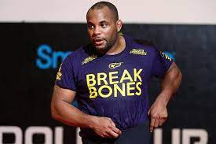

Daniel Cormier
Of all the sports covered so far, MMA is the one that I got into last. Daniel Cormier was the first fighter I was drawn towards as he was in a massive feud with Jon Jones at the time. Daniel Cormier has a background in amateur wrestling which he utilized often in his MMA career. He went on to become a champion in the UFC as well as holding 2 belts simultaneously. He recently retired and now I enjoy hearing his commentate and give analysis on UFC fights.